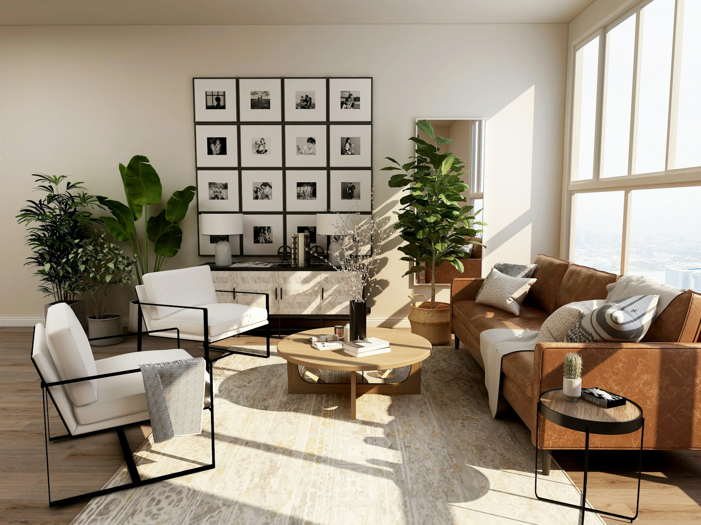

连接
人与空间之间的自然相遇
让居住的美好，
从一次清晰而可信的相遇开始。
从识别到每一次接触，
让专业更清晰，让连接更温暖。
以居住服务为场景，这次视觉探索围绕“连接、秩序、亲和”三个关键词展开。用更统一的图形、色彩和版式，建立一套可延展的品牌表达。
本作品为非官方概念练习。参考项目为 Lee _brand 的《贝壳品牌VI视觉识别规范》；本页保留参考中的原版品牌标志，版式与应用展示重新制作，不代表贝壳现行品牌规范或真实委托。
人与空间之间的自然相遇
复杂信息中的清晰与可信
专业服务也有温暖的一面
品牌识别的起点，也是整个视觉系统的核心。
采用参考作品中的贝壳原版图形与字标，
不改动其造型、笔画与标准组合。
保留原版上扬折线与下方微笑弧线，不重新绘制品牌标志。
沿用“贝壳”与“找房大平台”的原版文字造型及组合关系。
差异化集中在封面、间距、配色与应用排版，保持品牌识别一致。
点击切换底色，查看概念标志的适配方式。
围绕原版标准组合保留充分留白，避免文字或其他图形干扰识别。
根据使用场景调整尺寸，避免细节挤压和过度缩放。
从一个清晰的标志，
到一种熟悉的感受。
以蓝色建立品牌识别，
以暖中性色平衡专业与亲和。
清楚传递每一条信息，
认真回应每一种期待。
ABCDEFGHIJKLMNOPQRSTUVWXYZ
abcdefghijklmnopqrstuvwxyz
0123456789 / . , : ; ! ?
辅助版式与背景图形独立延展；品牌标志本身保持原样。
从一张名片到一处空间，系统因使用而完整。
用共同的识别规则，
连接品牌与每一次日常沟通。
切换查看名片、门店与海报的应用概念。
品牌应用概念示意
YOUR NAME / YOUR CONTACT
A PLACE TO BELONG.
品牌视觉概念 / 2026
BEIKE BRAND
VISUAL IDENTITY EXPLORATION
将视觉语言延伸到移动端与品牌内容，用一致的层级组织信息。
清晰的内容层级，熟悉的品牌识别。
从线下到线上，让体验自然衔接。

让阳光和生活，
都多一点空间。居住灵感 / 概念内容
这次探索希望建立的，不只是一个标志，而是一套在不同场景下都能延续的表达：清晰、有秩序，同时让人愿意靠近。
接下来需要通过更多真实尺寸、材质与使用环境验证识别表现，再完善印刷色值、制作工艺及数字端无障碍规范。本页所列参数仅服务于概念展示。
品牌标志保留参考原版；排版、文案、名片、门店、海报及数字应用为调整后的概念展示。
建筑与室内场景图：Unsplash。所有应用为概念示意，不代表真实客户、员工或投放。